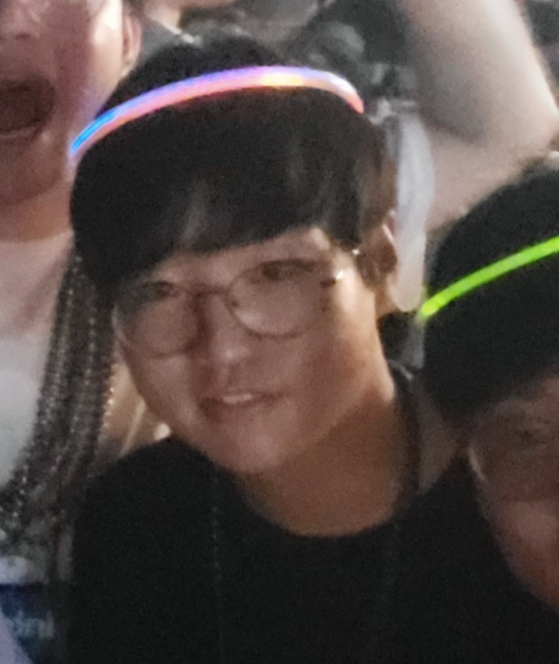

Jinwoo Kim

jinwoo-kim [at] kaist.ac.kr
CV /
Scholar /
GitHub /
X /
LinkedIn
I am a technical research personnel at KAIST.
I was previously a visiting scholar at NYU Global AI Frontier Lab
working with Kyunghyun Cho and Rajesh Ranganath.
I received my Ph.D. from KAIST advised by Seunghoon Hong.
My name 진우 眞友 is pronounced [jeen-oo].
I am interested in making deep learning models generalize better beyond their training data so that they can be used
to solve challenging problems, such as those in scientific domains. I am studying this problem from the complementary
perspectives of invariance and equivariance, parallel neural processing, and Solomonoff induction. I often use tools
from theories of graphs, manifolds, (semi)groups and categories, as well as Markov processes such as random walks,
diffusions, and flows.
Recently, I am focused on flow language models, latent reasoning, synthetic data, and vision pretraining.
Experience
-
KAIST - Expert Research Personnel (what?), 03/2026 – 02/2027
- New York University - Visiting Scholar, 11/2025 – 01/2026
- LG AI Research - Research Intern, 2022
Selected Papers
Thinking with Looped Flows
Ayhan Suleymanzade, Chanhyuk Lee, Floor Eijkelboom, Nicholas M. Boffi,
İsmail İlkan Ceylan†, Jinwoo Kim†
arXiv 2026
MUX: Continuous Reasoning via Multiplexed Tokens
Ayhan Suleymanzade, Halil Alperen Gozeten, Michael Bronstein, İsmail İlkan Ceylan†,
Jinwoo Kim†
NeurIPS 2026 Spotlight (1%)
Flow Map Language Models: One-step Language Modeling via Continuous Denoising
Chanhyuk Lee, Jaehoon Yoo, Manan Agarwal, Sheel Shah, Jerry Huang, Aditi Raghunathan,
Seunghoon Hong, Nicholas M. Boffi†, Jinwoo Kim†
NeurIPS 2026 / COLM NonAR-LM Workshop 2026 Spotlight
Self-conditioned Flow Map Language Models via Fixed-point Flows
Jaehoon Yoo*, Wonjung Kim*, Floor Eijkelboom, Chanhyuk Lee, Nicholas M. Boffi,
Seunghoon Hong†, Jinwoo Kim†
COLM NonAR-LM Workshop 2026 Oral
Posterior Refinement: Fast Language Generation via Any-Order Flow Maps
Manan Agarwal*, Sheel Shah*, Chanhyuk Lee, Jaehoon Yoo, Jerry Huang, Seunghoon Hong,
Aditi Raghunathan, Jinwoo Kim†, Nicholas M. Boffi†
COLM NonAR-LM Workshop 2026 Spotlight
What are the Right Symmetries for Formal Theorem Proving?
Krzysztof Olejniczak, Radoslav Dimitrov, Xingyue Huang, Bernardo Cuenca Grau,
Jinwoo Kim†, İsmail İlkan Ceylan†
ICML AI4Math Workshop 2026
Inverting Data Transformations via Diffusion Sampling
Jinwoo Kim*, Sékou-Oumar Kaba*, Jiyun Park, Seunghoon Hong†, Siamak Ravanbakhsh†
ICML 2026
Architecture-Agnostic Invariances for Deep Learning
Jinwoo Kim
Ph.D. Dissertation, 2026 KAIST CoE Best Dissertation Award
Flock: A Knowledge Graph Foundation Model via Learning on Random Walks
Jinwoo Kim*, Xingyue Huang*, Krzysztof Olejniczak, Kyungbin Min, Michael Bronstein,
Seunghoon Hong, İsmail İlkan Ceylan
ICLR 2026
Revisiting Random Walks for Learning on Graphs
Jinwoo Kim, Olga Zaghen*, Ayhan Suleymanzade*, Youngmin Ryou, Seunghoon Hong
ICLR 2025 Spotlight (3%)
Learning Probabilistic Symmetrization for Architecture Agnostic Equivariance
Jinwoo Kim, Tien Dat Nguyen, Ayhan Suleymanzade, Hyeokjun An, Seunghoon Hong
NeurIPS 2023 Spotlight (3%)
Universal Few-shot Learning of Dense Prediction Tasks with Visual Token Matching
Donggyun Kim, Jinwoo Kim, Seongwoong Cho, Chong Luo, Seunghoon Hong
ICLR 2023 Outstanding Paper Award (0.08%)
Pure Transformers are Powerful Graph Learners
Jinwoo Kim, Tien Dat Nguyen, Seonwoo Min, Sungjun Cho, Moontae Lee, Honglak Lee†,
Seunghoon Hong†
NeurIPS 2022
Full list of publications
Honors
- Best Ph.D. Dissertation Award, KAIST College of Engineering, 2026
- Outstanding Researcher Award, KAIST-Mila Prefrontal AI Research Center, 2024
- ELLIS Mobility Grant, ICML 2024 GRaM Workshop
- Outstanding Paper Award, ICLR 2023 (as coauthor)
- Silver Prize, Samsung Humantech Paper Award, 2023 (as coauthor)
- Qualcomm Innovation Fellowship Korea, 2022
- Excellence Award, KAIST Undergraduate Research Program, 2022 (as mentor)
- Kwanjeong Education Foundation Scholarship, 2022–2023
- KAIST Engineering Innovator Award, 2020
- National Science & Technology Scholarship, 2018–2020
- KAIST Alumni Fellowship, 2017–2020
- KAIST Presidential Fellowship, 2016–2020
- KAIST Dean's List, Spring 2016 / Fall 2016 / Spring 2018
Invited Talks
-
Flow language models
@ Discrete Diffusion Reading Group (04/2026), SNU (07/2026), POSTECH (10/2026)
-
Sequence modeling with spectral mean flows
@ BGU (12/2025)
-
Architecture-agnostic invariances for deep learning
@ Mila (07/2025, 12/2024), KAIST AI899 (05/2025), KAIST-Mila
Prefrontal AI Research Center (11/2024), SKKU (08/2024), POSTECH (11/2023)
-
Visual token matching for few-shot dense vision
@ KAIST-Samsung Electronics DS Division Exchange Meetup, 08/2023
-
Pure transformers are powerful graph learners
@ Microsoft USA (01/2023), NeurIPS 2022 at KAIST (11/2022), LoGaG (08/2022)
-
Higher-order transformers for sets, graphs, and hypergraphs
@ Qualcomm Korea (01/2023), KAIST Workshop (01/2022), NeurIPS Social: ML in Korea (12/2021)
-
Variational autoencoders for sets
@ Naver AI (09/2021), KCCV (09/2021)
-
Retinal waves and prenatal wiring of primary visual cortex
@ Society for Neuroscience, 10/2019
Academic Services
- Area Chair: ICLR 2027
- Workshop Area Chair: ICML 2026 GFM
- Conference Reviewer: NeurIPS, ICLR, ICML, CVPR, ICCV, AISTATS, LoG, TAG-DS, IJCNN, ACCV
- Journal Reviewer: TMLR, Neural Networks, IJCV
Teaching
- TA, Computer Vision (CS576), Spring 2022/2023
- TA, Introduction to Deep Learning (CS492I/CS371), Fall 2021/2022/2023
- TA, Samsung Research AI Expert Program, Summer 2021/2022/2023
- TA, Undergraduate Research Program (URP), Spring 2022/2024
Last updated: September 2026